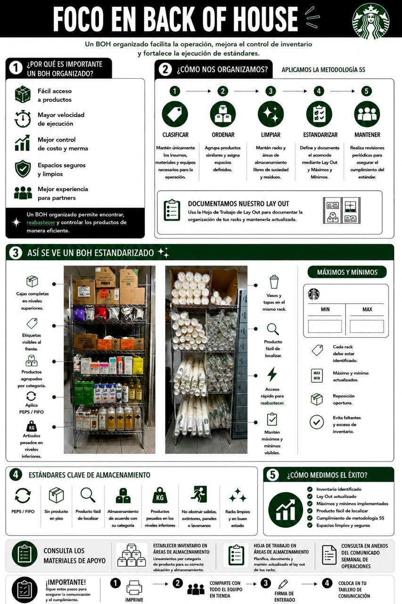
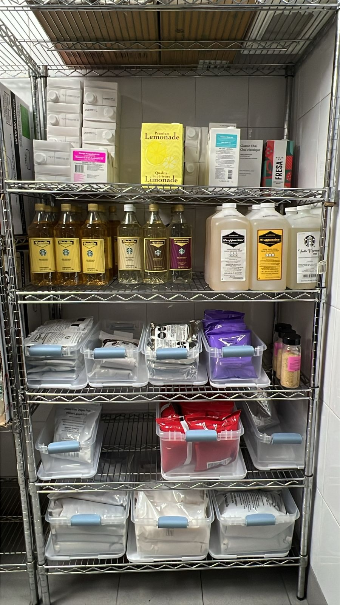
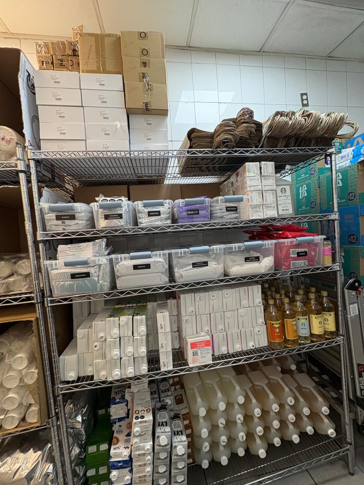
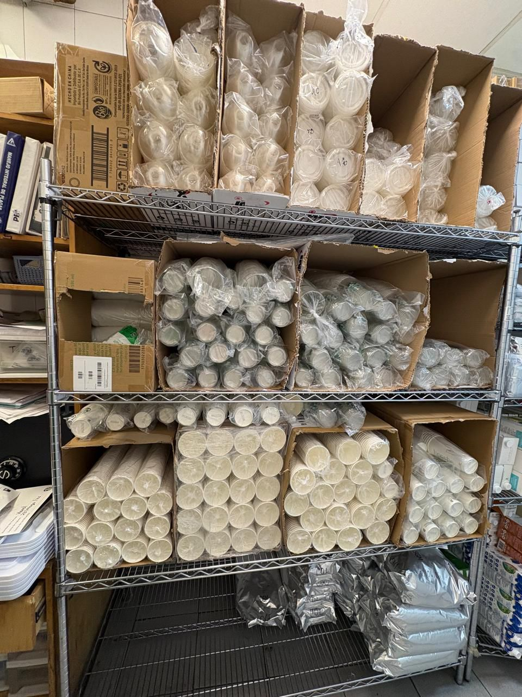

Executive Command Center
Estandar Max&Min
Documenta estándares de orden, limpieza, máximos y mínimos con fotos de ANTES y DESPUÉS. Genera un PDF profesional listo para compartir.
📸 Cámara o galería
📄 PDF dinámico
📶 Offline PWA
Guía rápida
Cómo usar la herramienta
Selecciona tienda
Elige CC, tienda, estación o área y confirma la fecha automática.
Captura ANTES
Adjunta la evidencia inicial del rack, estación, refrigerador o área.
Ejecuta 5S
Ordena, limpia, identifica producto y actualiza máximos y mínimos.
Captura DESPUÉS
Registra la mejora final con una foto clara y bien iluminada.
Agrega evidencia
Incluye varias estaciones si necesitas documentar más de un área.
Genera PDF
Descarga o comparte el archivo para subirlo a seguimiento.

Manual BOH · 5S
Rack identificado
Orden por categoría
Vasos y tapasCaptura ejecutiva
Datos generales
Antes / Después
Evidencias
Estándares clave
Checklist operativo
Salida PDF
Genera, descarga y comparte
El PDF incluye portada, resumen ejecutivo, checklist y una página por evidencia con foto ANTES y DESPUÉS.
Sube tu PDF a la carpeta Seguimiento_Max&Min_CN
Abrir carpeta de carga